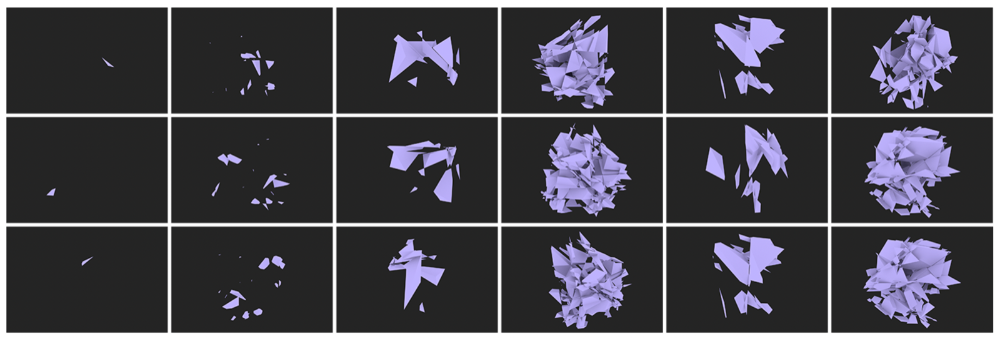
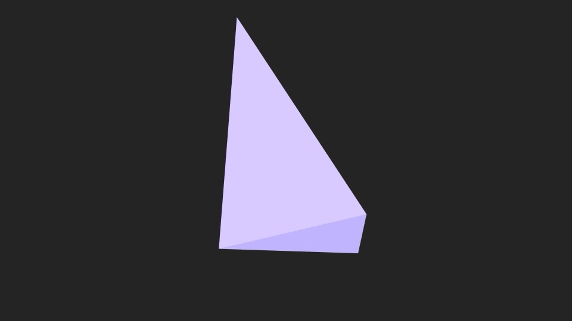
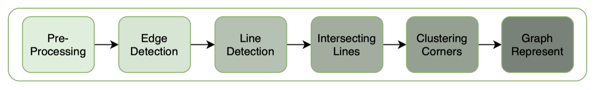
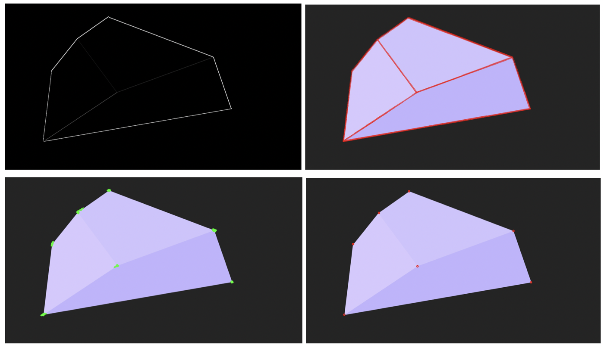

Active Polyhedral Scene Matching
Are these two 3-D objects the same? One photo throws away depth, so instead of staring harder the system moves the camera: it looks, extracts a geometric description, compares, and decides where to look next.
- Active vision
- Advanced Computer Vision course
- York University · 2022
- OpenCV · scikit-learn · NumPy

Why active?
Benchmarks such as ImageNet treat recognition as a single glance. But projecting a 3-D object onto an image plane discards much of its structure: two different polyhedra can look identical from one viewpoint. An active observer resolves the ambiguity the way people do, by changing viewpoint until the evidence is decisive.
The perception–action loop
AnimatedFrom pixels to a graph
Step through the feature extractor
InteractiveReal outputs saved by the pipeline for two evaluation scenes.


Comparing two objects
After clustering, each view becomes an undirected graph: nodes are corners and edges are the visible polyhedron edges, weighted by their length. The adjacency matrix is a compact, viewpoint-aware description that two scenes can be compared with. When the comparison is uncertain, the active policy proposes a new camera position and the loop runs again.
Limitations. The challenge provided no ground-truth labels, and the on-demand rendering API was slow enough that a large-scale evaluation was not practical. The system has every component of an active vision loop, but its accuracy was not measured at scale.
